Lesson 2 Getting Started with ggplot2
In this lesson we'll build on your knowledge of dplyr and the gapminder dataset and introduce ggplot2, the R graphics package par excellence. Like dplyr, ggplot2 is also a part of the Tidyverse family of packages. To install the whole family of packages, use install.packages('tidyverse'). To load all of them at once, use library(tidyverse). (Of course you can also install and load ggplot2 on its own if you prefer.) This lesson is only the tip of the iceberg when it comes to ggplot2. We'll pick up a few more ggplot2 tricks in future lessons. For a more comprehensive treatment, see the free online draft of Data Visualization: A Practical Introduction. Another good reference is R for Data Science, and don't forget the ggplot2 cheat sheet!
2.1 A simple scatterplot using ggplot2
We'll start off by constructing a subset of the gapminder dataset that contains information from the year 2007 that we'll use for our plots below.
library(gapminder)
library(tidyverse)
gapminder_2007 <- gapminder %>%
filter(year == 2007)It takes some time to grow accustomed to ggplot2 syntax, so rather than giving you a lot of detail, we'll examine a series of examples that start off simple and become more complex. The first of these is a simple scatterplot using gapminder_2007.
Each point will correspond to a single country in 2007. Its x-coordinate will be GDP per capita and its y-coordinate will be life expectancy. Here's the code:
ggplot(gapminder_2007) +
geom_point(mapping = aes(x = gdpPercap, y = lifeExp)) We see that GDP per capita is a very strong predictor of life expectancy, although the relationship is non-linear. Notice how I add a linebreak after the
We see that GDP per capita is a very strong predictor of life expectancy, although the relationship is non-linear. Notice how I add a linebreak after the +. This is analogous to how I always add a linebreak after the pipe %>%. While it isn't necessary for the code to run correctly, it improves readability.
2.1.1 Exercise
- Using my code example as a template, make a scatterplot with
popon the x-axis andlifeExpon the y-axis usinggapminder_2007. Does there appear to be a relationship between population and life expectancy?
There is no clear relationship between population and life expectancy based on the 2007 data:
ggplot(gapminder_2007) +
geom_point(mapping = aes(x = pop, y = lifeExp))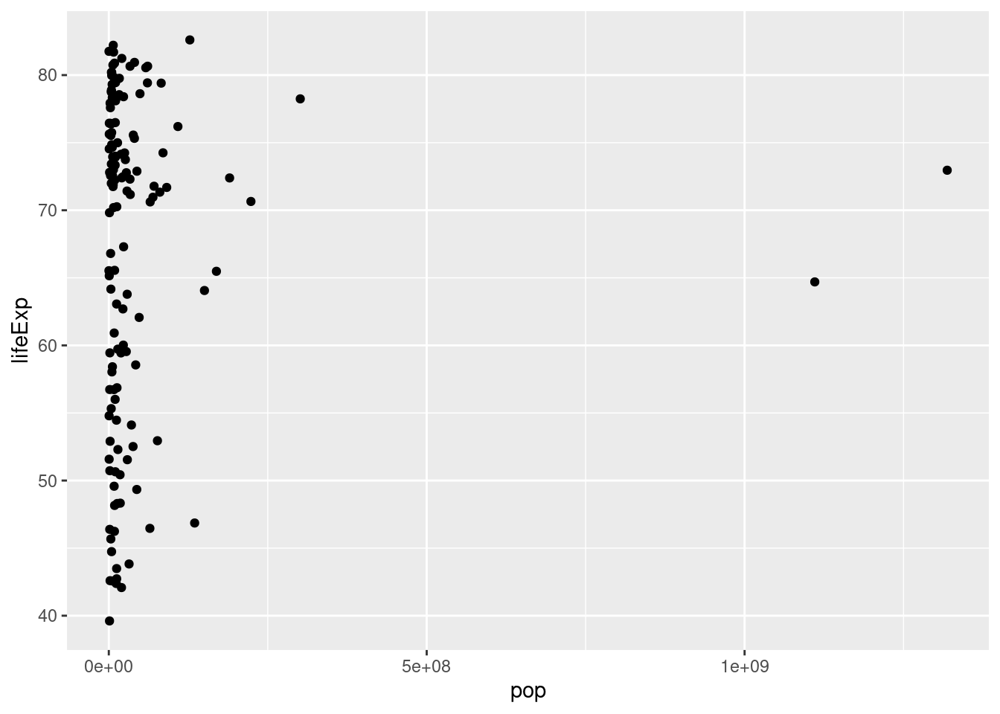
- Repeat 1. with
gdpPercapon the y-axis.
There is no clear relationship between population and GDP per capita based on the 2007 data:
ggplot(gapminder_2007) +
geom_point(mapping = aes(x = pop, y = gdpPercap))
2.2 Plotting on the log scale
It's fairly common to transform data onto a log scale before carrying out further analysis or plotting. To transform the x-axis to the log base 10 scale, it's as easy as adding a + scale_x_log10() to the end of our command from above:
ggplot(data = gapminder_2007) +
geom_point(mapping = aes(x = gdpPercap, y = lifeExp)) +
scale_x_log10() Again: notice how I split the code across multiple lines and ended each of the intermediate lines with the
Again: notice how I split the code across multiple lines and ended each of the intermediate lines with the +. This makes things much easier to read.
2.2.1 Exercise
- Using my code example as a template, make a scatterplot with the log base 10 of
popon the x-axis andlifeExpon the y-axis using thegapminder_2007dataset.
ggplot(data = gapminder_2007) +
geom_point(mapping = aes(x = pop, y = lifeExp)) +
scale_x_log10()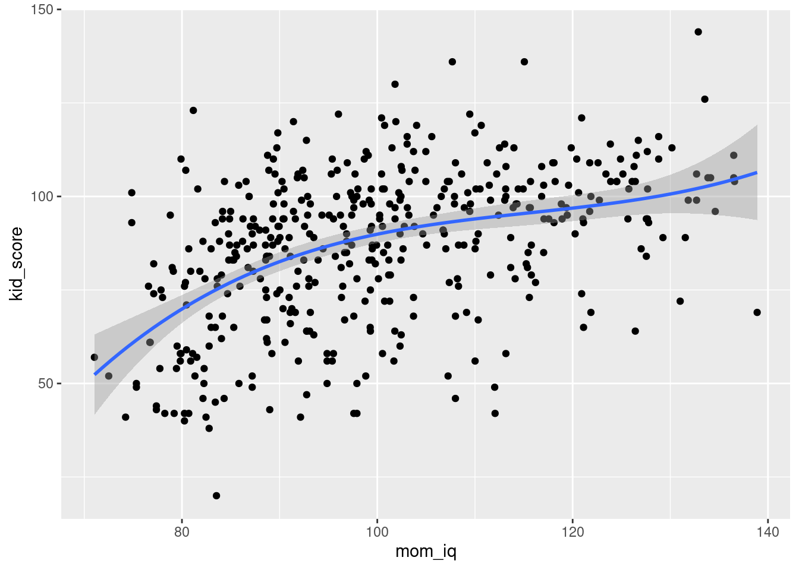
- Suppose that rather than putting the x-axis on the log scale, we wanted to put the y-axis on the log scale. Figure out how to do this, either by clever guesswork or a google search, and then repeat my example with
gdpPercapandlifeExpwithgdpPercapin levels andlifeExpin logs base 10.
ggplot(data = gapminder_2007) +
geom_point(mapping = aes(x = gdpPercap, y = lifeExp)) +
scale_y_log10()
- Repeat 2. but with both axes on the log scale.
ggplot(data = gapminder_2007) +
geom_point(mapping = aes(x = gdpPercap, y = lifeExp)) +
scale_x_log10() +
scale_y_log10()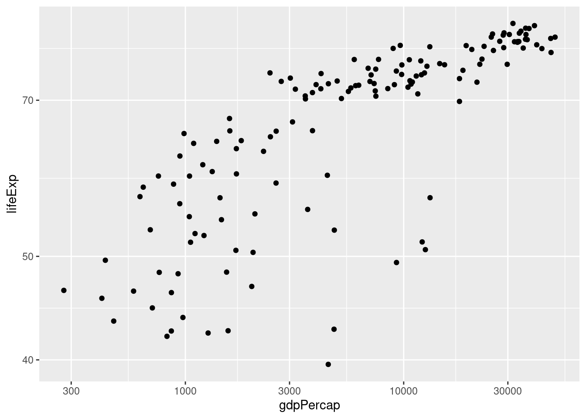
2.3 The color and size aesthetics
It's time to start unraveling the somewhat mysterious-looking syntax of ggplot.
To make a graph using ggplot we use the following template:
ggplot(data = <DATA>) +
<GEOM_FUNCTION>(mapping = aes(<MAPPINGS>))replacing <DATA>, <GEOM_FUNCTION>, and <MAPPINGS> to specify what we want to plot and how it should appear. The first part is easy: we replace <DATA> with the dataset we want to plot, for example gapminder_2007 in the example from above.
The second part is also fairly straightforward: we replace <GEOM_FUNCTION> with the name of a function that specifies the kind of plot we want to make.
So far we've only seen one example: geom_point() which tells ggplot that we want to make a scatterplot. We'll see more examples in later lessons. For now, I want to focus on the somewhat more complicated-looking mapping = aes(<MAPPINGS>).
The abbreviation aes is short for aesthetic and the code mapping = aes(<MAPPINGS>) defines what is called an aesthetic mapping. This is just a fancy way of saying that it tells R how we want our plot to look. The information we need to put in place of <MAPPINGS> depends on what kind of plot we're making. Thus far we've only examined geom_point() which produces a scatterplot. For this kind of plot, the minimum information we need to provide is the location of each point. For example, in our example above we wrote aes(x = gdpPercap, y = lifeExp) to tell R that gdpPercap gives the x-axis location of each point, and lifeExp gives the y-axis location.
When making a scatterplot with geom_point we are not limited to specifying the x and y coordinates of each point; we can also specify the size and color of each point. This gives us a useful way of displaying more than two variables in a two-dimensional plot. We do this using aes. For example, let's use the color of each point to indicate continent
ggplot(data = gapminder_2007) +
geom_point(mapping = aes(x = gdpPercap, y = lifeExp, color = continent)) +
scale_x_log10()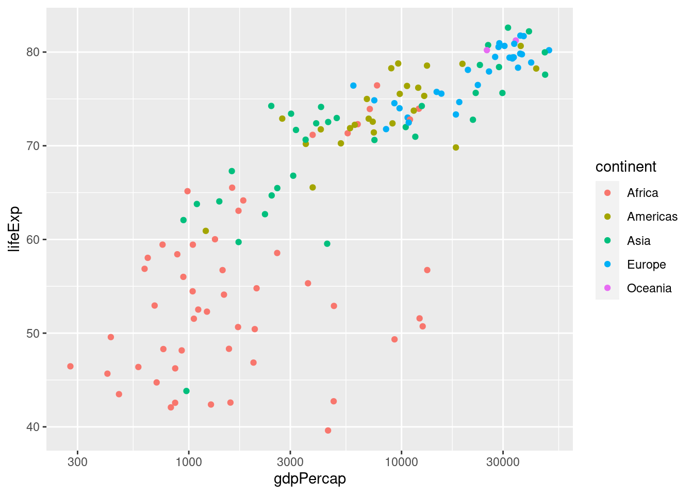
Notice how ggplot automatically generates a helpful legend. This plot makes it easy to see at a glance that the European countries in 2007 tend to have high GDP per capita and high life expectancy, while the African countries have the opposite. We can also use the size of each point to encode information, e.g. population:
ggplot(data = gapminder_2007) +
geom_point(mapping = aes(x = gdpPercap, y = lifeExp,
color = continent, size = pop)) +
scale_x_log10()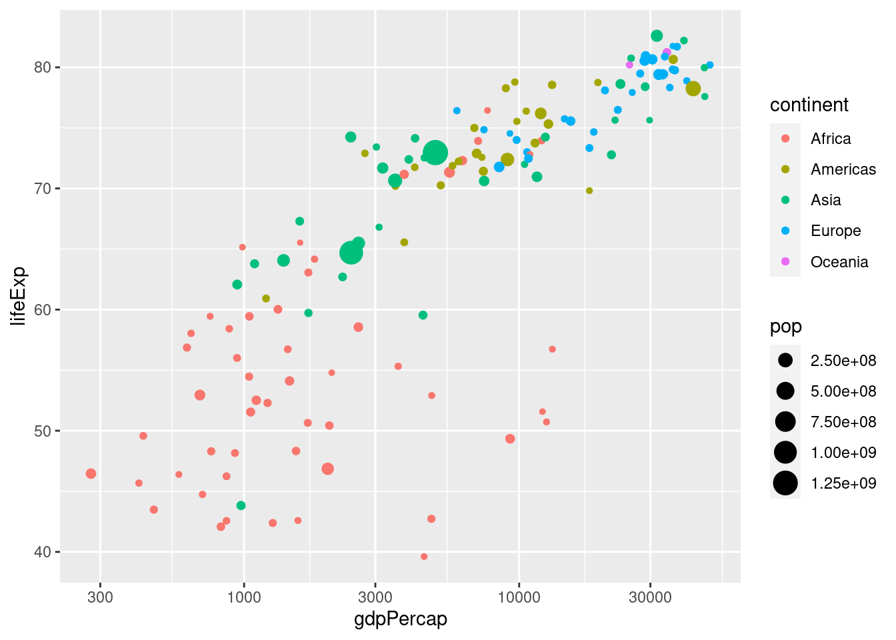
2.3.1 Exercise
- Would it make sense to set
size = continent? What about settingcol = pop? Explain briefly.
Neither of these makes sense since continent is categorical and pop is continuous: color is useful for categorical variables and size for continuous ones.
- The following code is slightly different from what I've written above. What is different. Try running it. What happens? Explain briefly.
ggplot(gapminder_2007) +
geom_point(aes(x = gdpPercap, y = lifeExp)) +
scale_x_log10() It still works! You don't have to explicitly write data or mapping when using ggplot. I only included these above for clarity. In the future I'll leave them out to make my code more succinct.
ggplot(gapminder_2007) +
geom_point(aes(x = gdpPercap, y = lifeExp)) +
scale_x_log10() 
- Create a tibble called
gapminder_1952that contains data fromgapminderfrom 1952.
gapminder_1952 <- gapminder %>%
filter(year == 1952)- Use
gapminder_1952from the previous part to create a scatter plot with population on the x-axis, life expectancy on the y-axis, and continent represented by the color of the points. Plot population on the log scale (base 10).
ggplot(gapminder_1952) +
geom_point(aes(x = pop, y = lifeExp, color = continent)) +
scale_x_log10()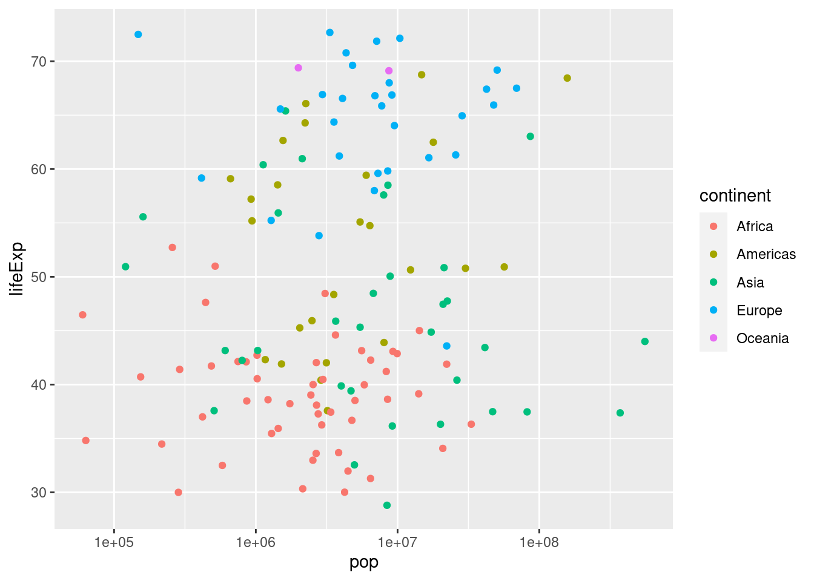
- Suppose that instead of indicating continent using color, you wanted all the points in the plot from 3. to be blue. Consult the chapter "Visualising Data" from R for Data Science to find out how to do this.
When you want color to be a variable from your dataset, put color = <VARIABLE> inside of aes; when you simply want to set the colors of all the points, put color = '<COLOR>' outside of aes, for example
ggplot(gapminder_1952) +
geom_point(aes(x = pop, y = lifeExp), color = 'blue') +
scale_x_log10()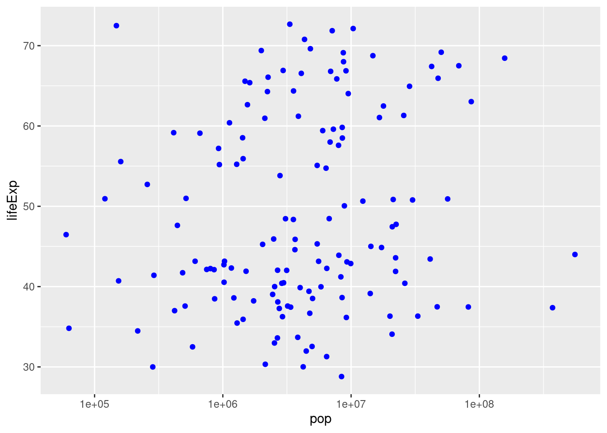
2.4 Faceting - Plots for Multiple Subsets
Recall our plot of GDP per capita and life expectancy in 2007 from above:
gapminder_2007 <- gapminder %>%
filter(year == 2007)
ggplot(gapminder_2007) +
geom_point(aes(x = gdpPercap, y = lifeExp, color = continent, size = pop)) +
scale_x_log10() 
This is an easy way to make a plot for a single year. But what if you wanted to make the same plot for every year in the gapminder dataset? It would take a lot of copying-and-pasting of the preceding code chunk to accomplish this. Fortunately there's a much easier way: faceting. In ggplot2 a facet is a subplot that corresponds to a subset of your dataset, for example the year 2007. We'll now use faceting to reproduce the plot from above for all the years in gapminder simultaneously:
ggplot(gapminder) +
geom_point(aes(x = gdpPercap, y = lifeExp, color = continent, size = pop)) +
scale_x_log10() +
facet_wrap(~ year)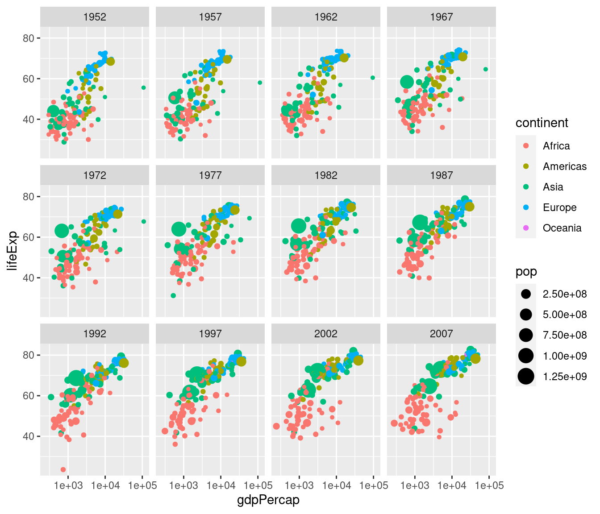
Note the syntax here: in a similar way to how we added scale_x_log10() to plot on the log scale, we add facet_wrap(~ year) to facet by year.
The tilde ~ is important: this has to precede the variable by which you want to facet.
Now that we understand how to produce it, let's take a closer look at this plot. Notice how this plot allows us to visualize five variables simultaneously. By looking at how the plots change over time, we see a pattern of increasing GDP per capita and life expectancy throughout the world between 1952 and 2007. Notice in particular the dramatic improvements in both variables in the Asian economies.
2.4.1 Exercise
- What would happen if I were to run the following code? Explain briefly.
ggplot(gapminder_2007) +
geom_point(aes(x = gdpPercap, y = lifeExp, color = continent, size = pop)) +
scale_x_log10() +
facet_wrap(~ year)We'll only get one facet since the tibble gapminder_2007 only has data for 2007:
ggplot(gapminder_2007) +
geom_point(aes(x = gdpPercap, y = lifeExp, color = continent, size = pop)) +
scale_x_log10() +
facet_wrap(~ year)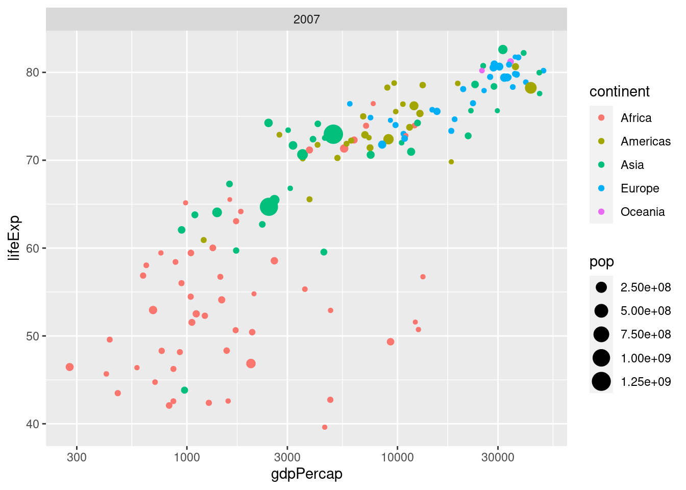
- Make a scatterplot with data from
gapminderfor the year 1977. Your plot should be faceted by continent with GDP per capita on the log scale on the x-axis, life expectancy on the y-axis, and population indicated by the size of each point.
gapminder_1977 <- gapminder %>%
filter(year == 1977)
ggplot(gapminder_1977) +
geom_point(aes(x = gdpPercap, y = lifeExp, size = pop)) +
scale_x_log10() +
facet_wrap(~ continent)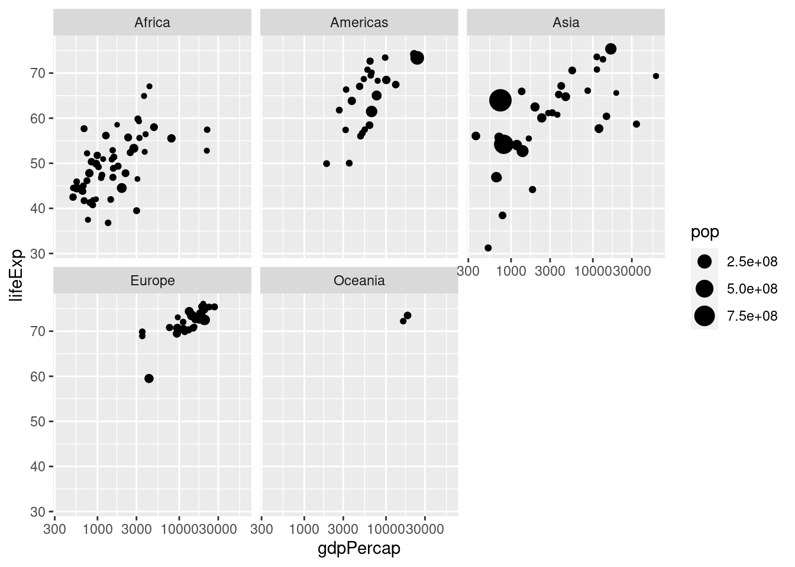
- What would happen if you tried to facet by
pop? Explain briefly.
You'll get something crazy if you try this. Population is continuous rather than categorical so every country has a different value for this variable. You'll end up with one plot for every country, containing a single point:
# Not run: it takes a long time and looks nasty!
gapminder_1977 <- gapminder %>%
filter(year == 1977)
ggplot(gapminder_1977) +
geom_point(aes(x = gdpPercap, y = lifeExp, color = continent)) +
scale_x_log10() +
facet_wrap(~ pop)2.5 Plotting summarized data
By combining summarize and group_by with ggplot, it's easy to make plots of grouped data.
For example, here's how we could plot total world population in millions from 1952 to 2007.
First we construct a tibble which I'll name by_year containing the desired summary statistic grouped by year and display it:
by_year <- gapminder %>%
mutate(popMil = pop / 1000000) %>%
group_by(year) %>%
summarize(totalpopMil = sum(popMil))
by_year## # A tibble: 12 × 2
## year totalpopMil
## <int> <dbl>
## 1 1952 2407.
## 2 1957 2664.
## 3 1962 2900.
## 4 1967 3217.
## 5 1972 3577.
## 6 1977 3930.
## 7 1982 4289.
## 8 1987 4691.
## 9 1992 5111.
## 10 1997 5515.
## 11 2002 5887.
## 12 2007 6251.Then we make a scatterplot using ggplot:
ggplot(by_year) +
geom_point(aes(x = year, y = totalpopMil)) 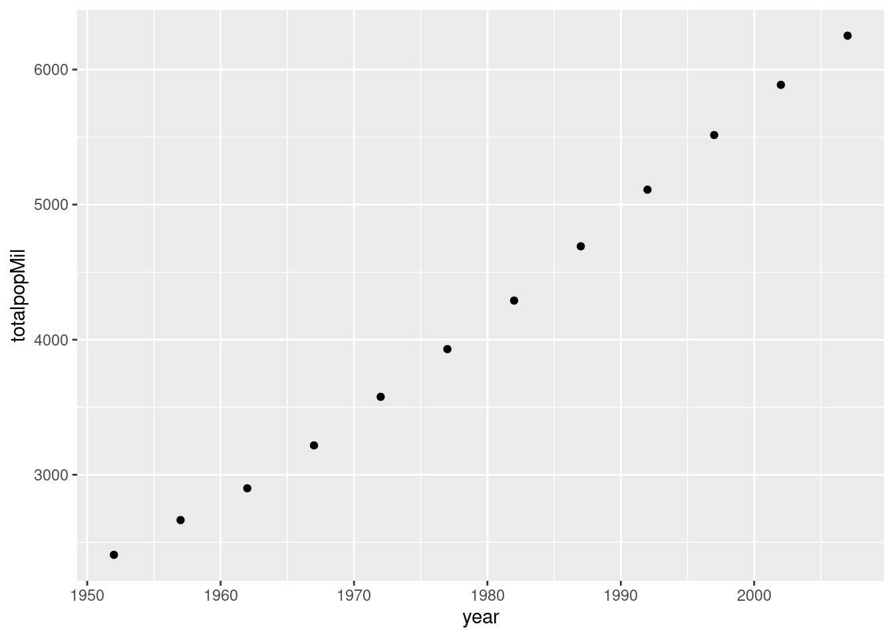 Here's a more complicated example where we additionally use color to plot each continent separately:
by_year_continent <- gapminder %>%
mutate(popMil = pop / 1000000) %>%
group_by(year, continent) %>%
summarize(totalpopMil = sum(popMil))
by_year## # A tibble: 12 × 2
## year totalpopMil
## <int> <dbl>
## 1 1952 2407.
## 2 1957 2664.
## 3 1962 2900.
## 4 1967 3217.
## 5 1972 3577.
## 6 1977 3930.
## 7 1982 4289.
## 8 1987 4691.
## 9 1992 5111.
## 10 1997 5515.
## 11 2002 5887.
## 12 2007 6251.ggplot(by_year_continent) +
geom_point(aes(x = year, y = totalpopMil, color = continent)) 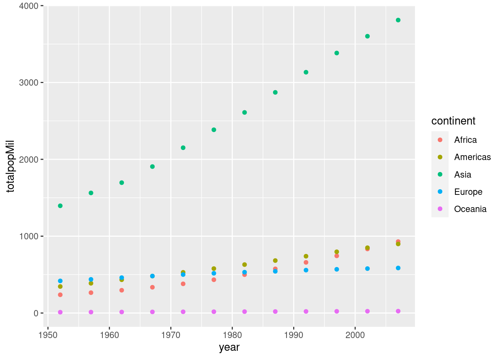 Make sure you understand how the preceding example works before attempting the exercise.
2.5.1 Exercise
- What happens if you append
+ expand_limits(y = 0)to the precedingggplotcode? Why might this be helpful in some cases?
The function expand_limits() lets us tweak the limits of our x or y-axis in a ggplot. In this particular example expand_limits(y = 0) ensures that the y-axis begins at zero. Without using this command, ggplot will choose the y-axis on its own so that there is no "empty space" in the plot. Sometimes we may want to override this behavior.
- Make a scatter with average GDP per capita across all countries in
gapminderin the y-axis andyearon the x-axis.
by_year <- gapminder %>%
group_by(year) %>%
summarize(meanGDPc = mean(gdpPercap))
ggplot(by_year) +
geom_point(aes(x = year, y = meanGDPc)) 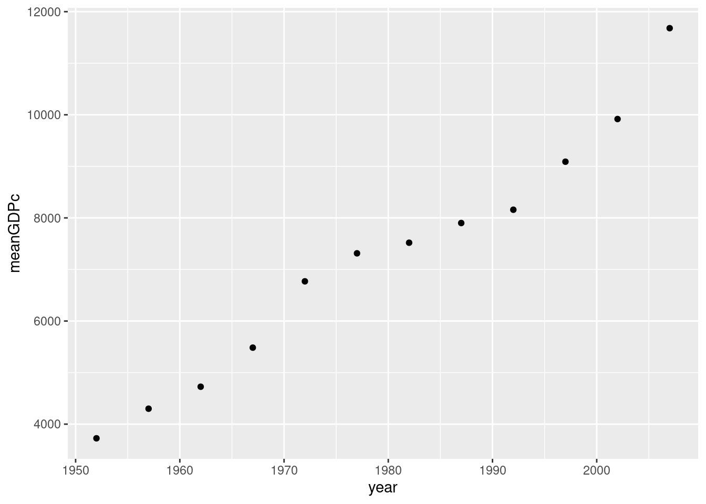
- Repeat 2. broken down by continent, using color to distinguish the points. Put mean GDP per capita on the log scale.
by_year <- gapminder %>%
group_by(year, continent) %>%
summarize(meanGDPc = mean(gdpPercap))## `summarise()` has grouped output by 'year'. You can override using the
## `.groups` argument.ggplot(by_year) +
geom_point(aes(x = year, y = meanGDPc, color = continent)) +
scale_y_log10()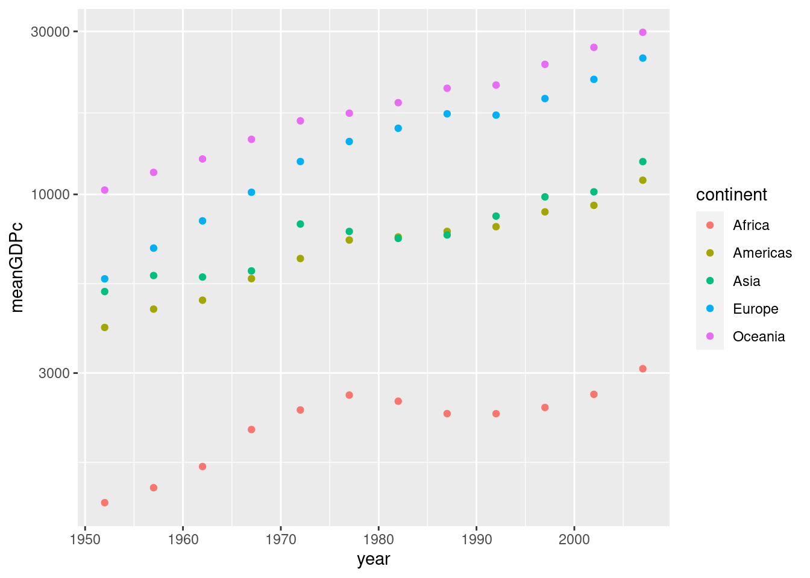
2.6 Line plots
Thus far we've only learned how to make one kind of plot with ggplot: a scatterplot, which we constructed using geom_scatter(). Sometimes we want to connect the dots in a scatterplot, for example when we're interested in visualizing a trend over time. The resulting plot is called a line plot. To make one, simply replace geom_scatter() with geom_line(). For example:
by_year_continent <- gapminder %>%
mutate(popMil = pop / 1000000) %>%
group_by(year, continent) %>%
summarize(totalpopMil = sum(popMil))
by_year## # A tibble: 60 × 3
## # Groups: year [12]
## year continent meanGDPc
## <int> <fct> <dbl>
## 1 1952 Africa 1253.
## 2 1952 Americas 4079.
## 3 1952 Asia 5195.
## 4 1952 Europe 5661.
## 5 1952 Oceania 10298.
## 6 1957 Africa 1385.
## 7 1957 Americas 4616.
## 8 1957 Asia 5788.
## 9 1957 Europe 6963.
## 10 1957 Oceania 11599.
## # … with 50 more rowsggplot(by_year_continent) +
geom_line(aes(x = year, y = totalpopMil, color = continent)) 
2.6.1 Exercise
Repeat exercise 5-3 with a line plot rather than a scatterplot.
by_year <- gapminder %>%
group_by(year, continent) %>%
summarize(meanGDPc = mean(gdpPercap))## `summarise()` has grouped output by 'year'. You can override using the
## `.groups` argument.ggplot(by_year) +
geom_line(aes(x = year, y = meanGDPc, color = continent)) +
scale_y_log10()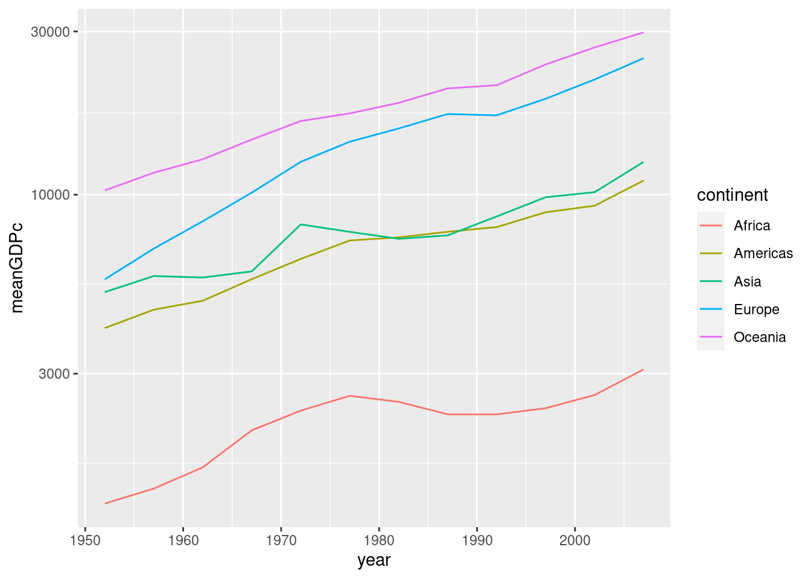
2.7 Bar plots
To make a bar plot, we use geom_col(). Note that the x argument of aes needs to be a categorical variable for a bar plot to make sense. Here's a simple example:
by_continent <- gapminder %>%
filter(year == 2007) %>%
group_by(continent) %>%
summarize(meanLifeExp = mean(lifeExp))
ggplot(by_continent) +
geom_col(aes(x = continent, y = meanLifeExp))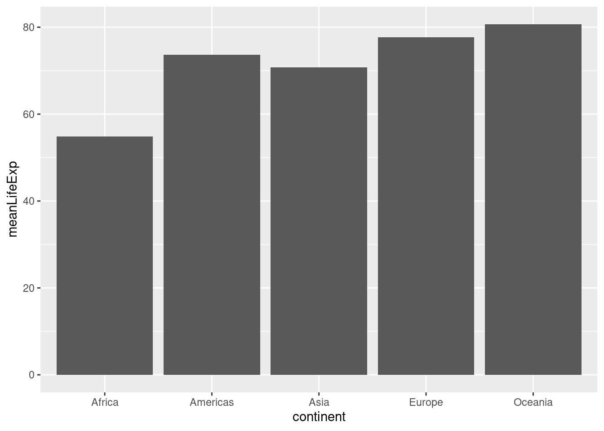
Sometimes we want to turn a bar plot, or some other kind of plot, on its side. This can be particularly helpful if the x-axis labels are very long. To do this, simply add + coord_flip() to your ggplot command, for example:
ggplot(by_continent) +
geom_col(aes(x = continent, y = meanLifeExp)) +
coord_flip()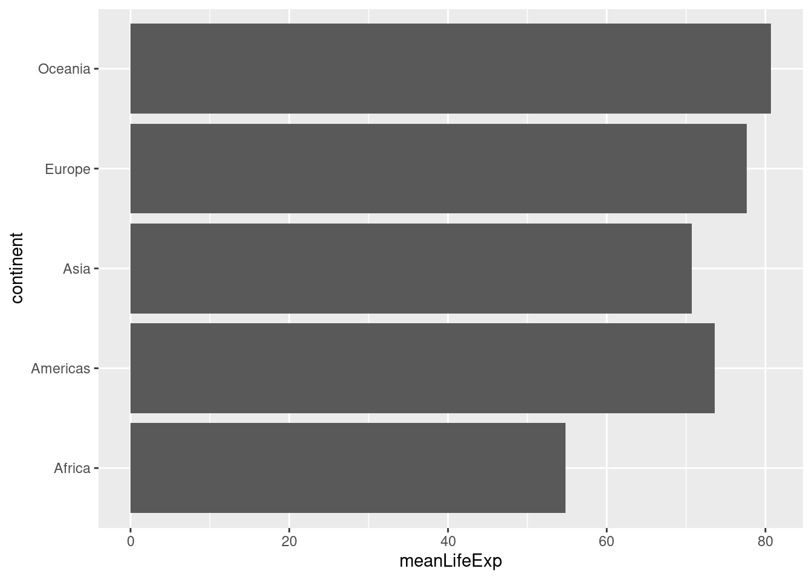
2.8 Cleveland Dot Charts
Now that you know how to make a barchart don't bother; dot charts as described by Cleveland (1984), are a simpler, cleaner and more flexible alternative.
ggplot(by_continent) +
geom_point(aes(x = meanLifeExp, y = continent))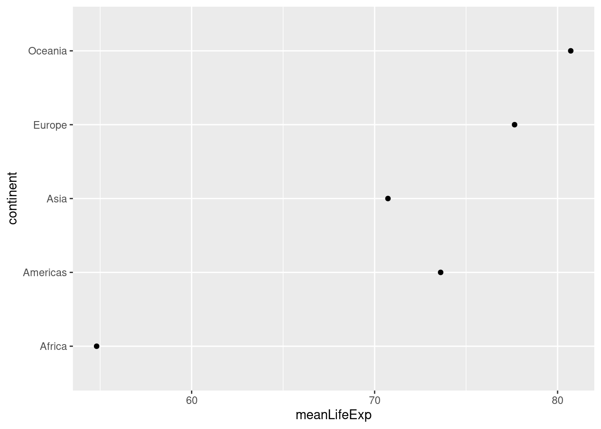
Unlike the equivalent bar chart from above, this dot chart restricts the meanLifeExp axis rather than extending it all the way to zero. This makes sense given that our interest in making this plot is to compare average life expectancy across continents.
Dot charts are typically most informative when sorted by the continuous variable, meanLifeExp in our case. A convenient way to achieve this is by using the fct_reorder() function from the forcats package, a member of the Tidyverse. Here's a simple pipeline that does the trick:
library(forcats)
by_continent %>%
mutate(continent = fct_reorder(continent, meanLifeExp)) %>%
ggplot() +
geom_point(aes(x = meanLifeExp, y = continent)) The first argument of
The first argument of fct_reorder() is the factor whose levels we want to re-order. The second argument is the variable that we'll use to determine the order. In our case, we reorder continent according to meanLifeExp. Another thing worth noticing in the preceding code chunk is the way that I modified by_continent in place and piped the result directly into ggplot(). I didn't bother to store this modified version of by_continent or give it a new name, because I knew that I wouldn't need to use it again.
Because dots take up less space than bars, dot charts provide a cleaner way of making comparisons within and between groups simultaneously. Here's a more complicated example that shows how life expectancy has changed in each continent between 1987 and 2007:
gapminder %>%
filter(year %in% c(1987, 2007)) %>%
mutate(year = factor(year)) %>%
group_by(continent, year) %>%
summarize(meanLifeExp = mean(lifeExp)) %>%
ggplot(aes(x = meanLifeExp, y = continent)) +
geom_line(aes(group = continent)) +
geom_point(aes(color = year))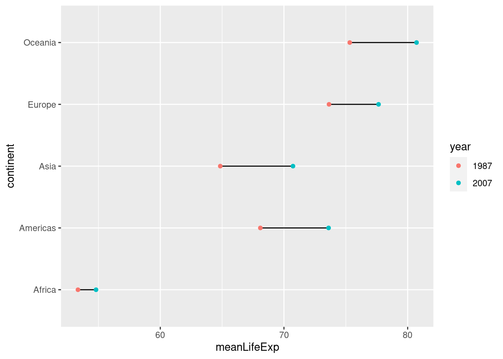
2.8.1 Exercise
Make a dot chart of GDP per capita in all European countries in the year 2007. Sort the dots so that the country with the highest GDP per capita appears a the top and the country with the lowest appears at the bottom.
gapminder %>%
filter(continent == 'Europe', year == 2007) %>%
mutate(country = fct_reorder(country, gdpPercap)) %>%
ggplot() +
geom_point(aes(x = gdpPercap, y = country))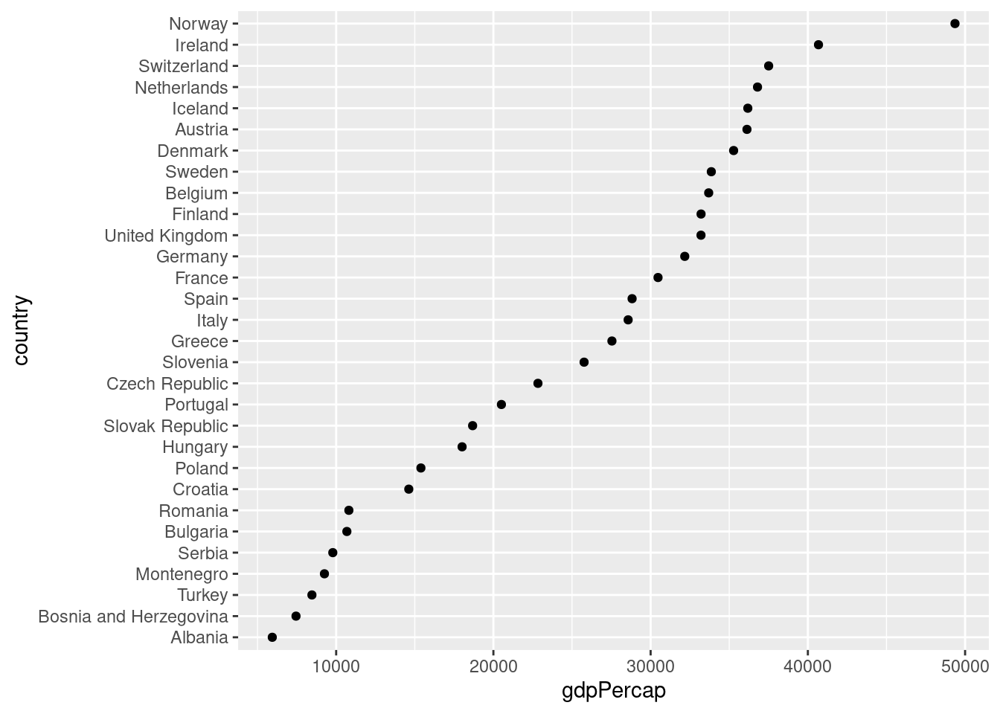
2.9 Histograms
To make a ggplot2 histogram, we use the function geom_histogram(). Recall that a histogram summarizes a single variable at a time by forming non-overlapping bins of equal width and calculating the fraction of observations in each bin. If we choose a different width for the bins, we'll get a different histogram. Here's an example of two different bin widths:
gapminder_2007 <- gapminder %>%
filter(year == 2007)
ggplot(gapminder_2007) +
geom_histogram(aes(x = lifeExp), binwidth = 5)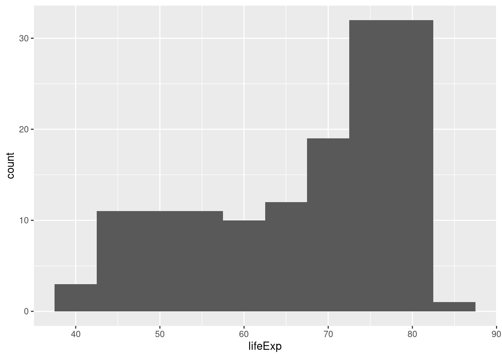
ggplot(gapminder_2007) +
geom_histogram(aes(x = lifeExp), binwidth = 1)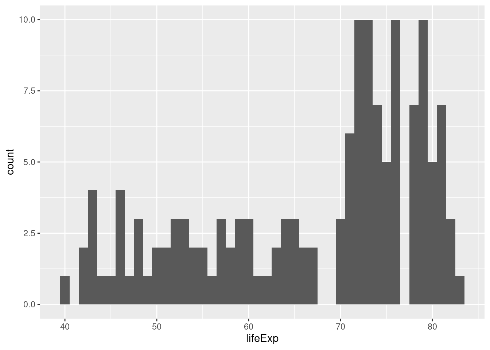
2.9.1 Exercise
- All of the examples we've seen that use
ggplotbesides histograms have involved specifying bothxandywithinaes(). Why are histograms different?
This is because histograms only depict a single variable while the other plots we've made show two variables at once.
- What happens if you don't specify a bin width in either of my two examples?
If you don't specify a bin width, ggplot2 will pick one for you and possibly give you a warning suggesting that you pick a better bin width manually.
- Make a histogram of GDP per capita in 1977. Play around with different bin widths until you find one that gives a good summary of the data.
There's no obvious right answer for the bin width, but here's one possibility:
gapminder1977 <- gapminder %>%
filter(year == 1977)
ggplot(gapminder_1977) +
geom_histogram(aes(x = gdpPercap), binwidth = 5000)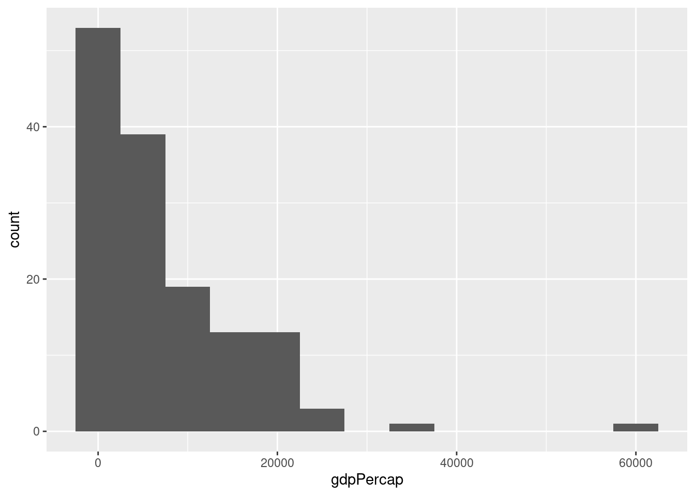
- Repeat 3. but put GDP per capita on the log scale.
You'll need a much smaller bin width when using the log scale, for example:
ggplot(gapminder_1977) +
geom_histogram(aes(x = gdpPercap), binwidth = 0.2) +
scale_x_log10()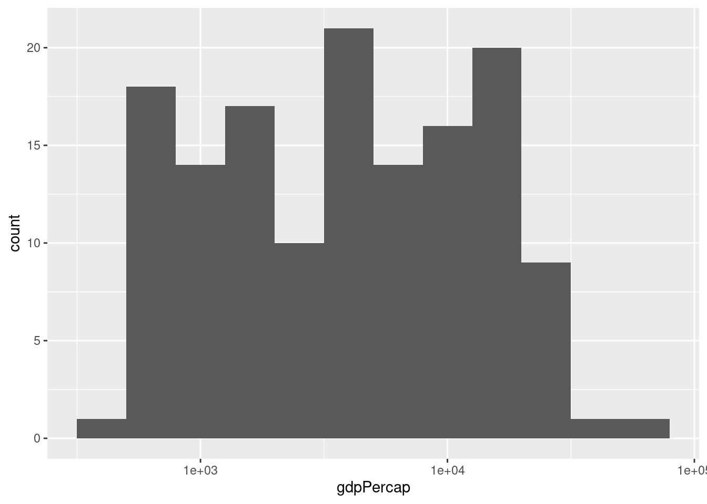
- Compare and contrast the two different histograms you've made.
No right answer: it's a discussion question! But the idea is to see how taking logs gets rid of the huge positive skewness in GDP per capita.
2.10 Boxplots
The final kind of ggplot we'll learn about in this lesson is a boxplot, a visualization of the five-number summary of a variable: minimum, 25th percentile, median, 75th percentile, and maximum. To make a boxplot in ggplot we use the function geom_boxplot(), for example:
ggplot(gapminder_2007) +
geom_boxplot(aes(x = continent, y = lifeExp))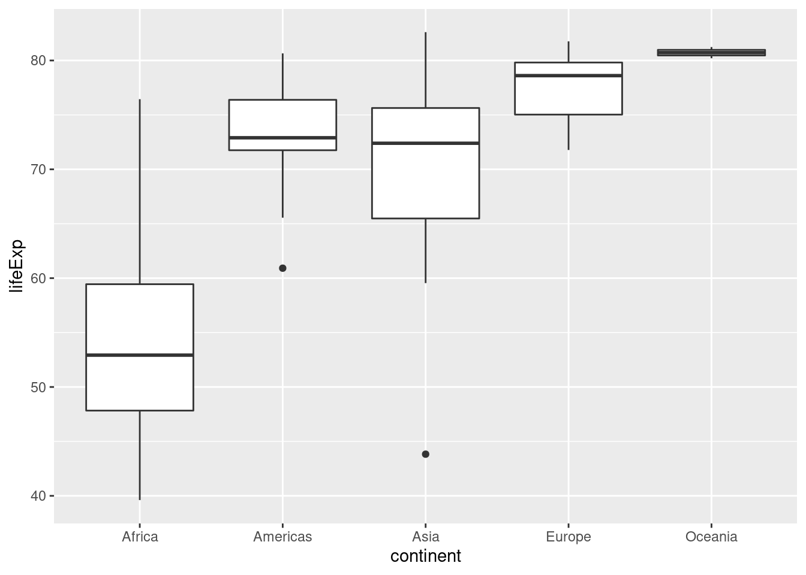 Compared to histograms, boxplots provide less detail but allow us to easily compare across groups.
2.10.1 Exercise
- What is the meaning of the little "dots" that appear in the boxplot above? Use a Google search to find out what they are and how they are computed.
They are outliers: ggplot considers any observation that is more than 1.5 times the interquartile range away from the "box" to be an outlier, and adds a point to indicate it.
- Use faceting to construct a collection of boxplots, each of which compares log GDP per capita across continents in a given year. Turn your boxplots sideways to make it easier to read the continent labels.
ggplot(gapminder) +
geom_boxplot(aes(x = continent, y = gdpPercap)) +
facet_wrap(~ year) +
scale_y_log10() +
coord_flip() +
ggtitle('GDP per Capita by Continent: 1952-2007')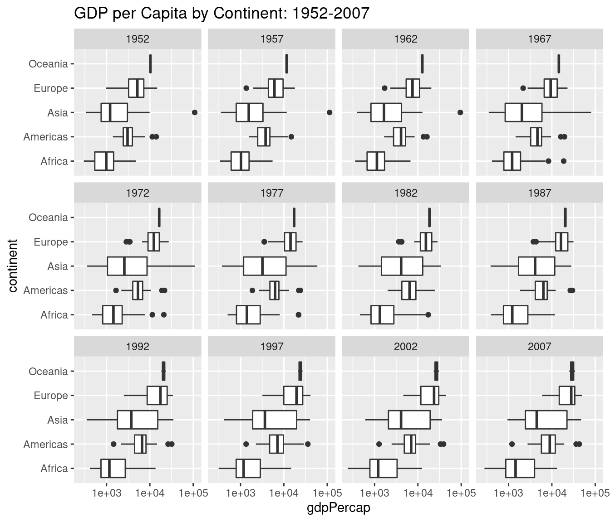
- Use a Google search to find out how to add a title to a
ggplot. Use it to add a title to the plot you created in 2.
Use ggtitle('YOUR TITLE HERE') as I did in my solution to 2. above.